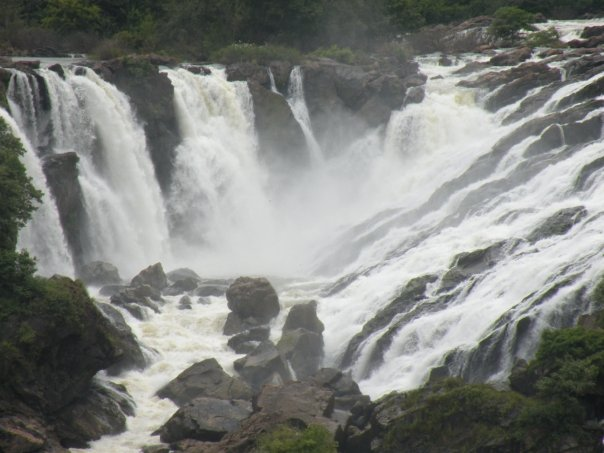

IMAGES | |
|---|---|
Rolls-Royce Introduces Limited Edition GhostThe Rolls-Royce Ghost is a full-sized luxury car manufactured by Rolls-Royce Motor Cars. The "Ghost" nameplate, named in honour of the Silver Ghost. |
 |
|  | Shivanasamudra Fallsis a cluster of waterfalls on the borders of Malavalli, Mandya and Kollegala, Chamarajanagara, in Karnataka, India, situated along the river Kaveri. The falls form the contour between the districts of Chamarajanagara and Mandya. |
Taj MahalThe Taj Mahal 'Crown of the Palace' is an ivory-white marble mausoleum on the right bank of the river Yamuna in Agra, Uttar Pradesh, India. |
 |
VIDEOS | |
VideoThe video tag is used to embed video content in a document, such as a movie clip or other video streams. The video tag contains one or more source tags with different video sources. The browser will choose the first source it supports. |
|